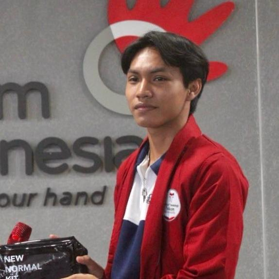
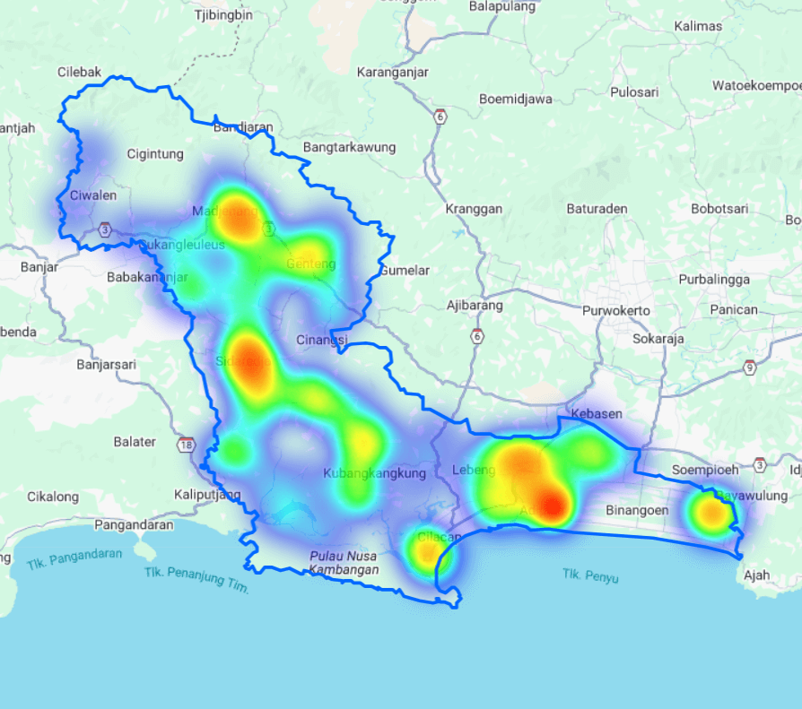
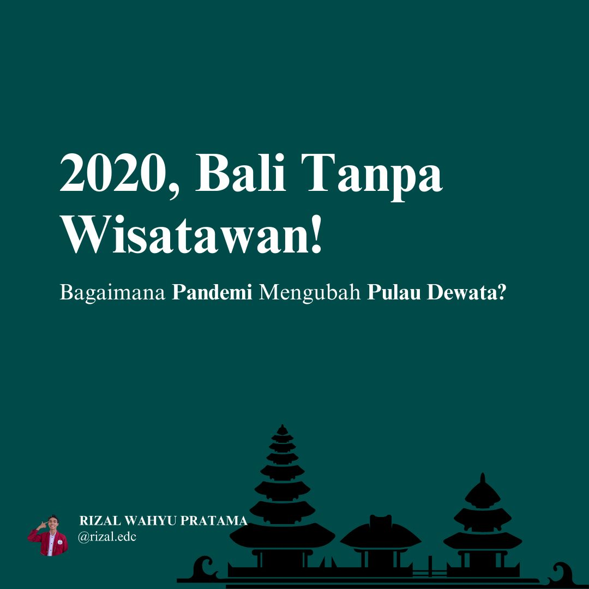

Hello, I'm
Rizal Wahyu
Pratama
Data |
Mengubah data mentah menjadi insight yang membawa bisnis Anda ke level berikutnya.

Hello, I'm
Mengubah data mentah menjadi insight yang membawa bisnis Anda ke level berikutnya.
Get to know me better

Saya Rizal Wahyu Pratama, mahasiswa S1 Sains Data di Telkom University dengan GPA 3.92 dan penerima Beasiswa APERTI BUMN 2023. Memiliki passion dalam mengolah data kompleks menjadi insight yang bernilai menggunakan Python, SQL, dan Machine Learning.
Pengalaman magang di BPS dan Telkom University mengasah kemampuan saya dalam visualisasi data dan analisis statistik. Saya juga aktif berkontribusi dalam penelitian ilmiah dengan publikasi jurnal sebagai penulis pertama. Sebagai Mahasiswa Berprestasi Prodi tahun 2025, saya berusaha memberikan dampak positif melalui data.
Technologies I work with
Core languages for data manipulation and analysis
Tools for creating impactful visual stories
Advanced analytics and machine learning
Some of my recent work

Sistem rekomendasi jalur evakuasi ke shelter saat banjir di Kabupaten Cilacap. Menggunakan algoritma Random Forest untuk pemilihan rute optimal.
View Project
Dashboard interaktif yang menyajikan data dan insight tentang pertanian perkotaan di Jakarta, lengkap dengan berita terkini seputar urban farming.
View Project
Analisis perbandingan tren kunjungan wisatawan Bali sebelum dan setelah pandemi COVID-19, dipublikasikan dalam jurnal ilmiah.
View on LinkedInMy professional journey
S1 Sains Data • Semester 6
Sedang menempuh pendidikan Sarjana dengan fokus pada Data Science, Machine Learning, dan Statistical Analysis.
AI Jalur Evakuasi Bencana Banjir Kabupaten Cilacap
Forecasting Inflasi Indonesia dengan LSTM
Website Interaktif Urban Farming Jakarta
HR Staffing
Himpunan Mahasiswa Sains Data
Student Roadshow
Penerimaan Mahasiswa Baru Tel-U